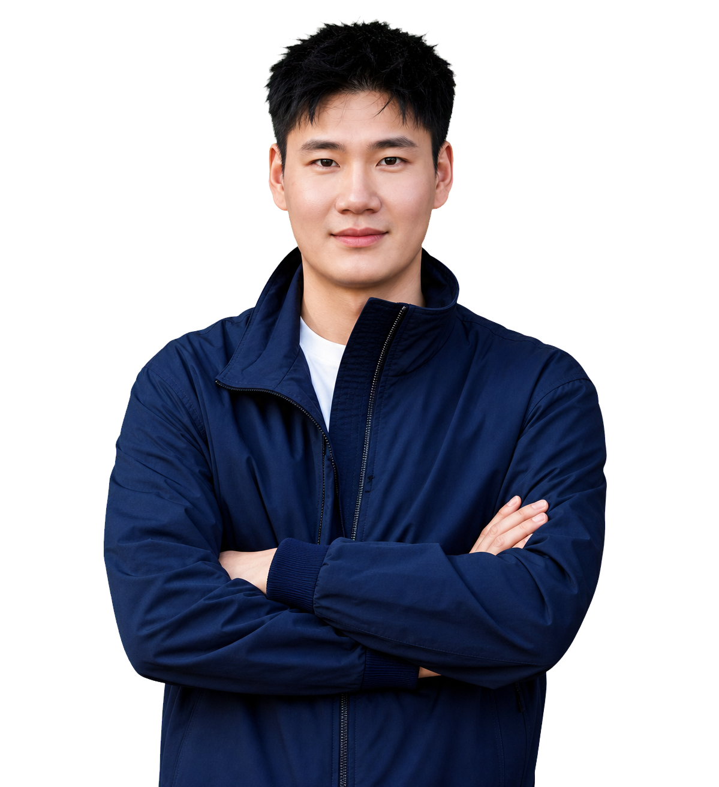

AIGC 创作与工作流搭建
熟练使用 Codex、Gemini、ChatGPT 开展创意发散、脚本开发与辅助编程，结合 Seedance、Kling 等工具完成 AI 视频生成及素材迭代。搭建可复用的 AI 创作工作流，已沉淀个人 AI 短片 Prompt 镜头创作 Skills；熟练运用 AI 辅助编程（Vibe Coding）开发 MVP，将内容生产与重复任务自动化，个人开发自动化投放日报和内部提效 HTML 工具。

CONTENT WITH IMPACT.有内容脑，也有生意脑。
自然流量与付费投放结合做海外社媒，有内容脑，也有生意脑。不想当只会定时发帖的“人形排期表”。喜欢琢磨内容、折腾新想法，但比起“这条好有创意”，更在意：用户有没有被打动？产品卖点有没有讲清楚？流量能不能变成实实在在的增长和订单？拒绝自嗨，创意要长在产品上，效果要落在数据里。有丰富的海外多平台运营和本地化管理经验，知道出海不只是换一种语言发内容，更是理解当地人的生活、表达和消费习惯。能聊创意、看数据，也能和本地团队一起把想法做出来。
熟练使用 Codex、Gemini、ChatGPT 开展创意发散、脚本开发与辅助编程，结合 Seedance、Kling 等工具完成 AI 视频生成及素材迭代。搭建可复用的 AI 创作工作流，已沉淀个人 AI 短片 Prompt 镜头创作 Skills；熟练运用 AI 辅助编程（Vibe Coding）开发 MVP，将内容生产与重复任务自动化，个人开发自动化投放日报和内部提效 HTML 工具。
具备从创意策划、脚本分镜、拍摄执行到后期剪辑、调色、声音处理与 Blender 3D 建模的完整制作能力。大学期间创作 10+ 部大广赛和全国计算机设计大赛的国家级获奖创意短片。
具备北美内容制作和东南亚本地工作及本地化团队搭建经验，能够协调创作者、制作与运营资源，推进跨文化沟通和项目交付。结合本地文化语境、用户偏好及平台特点调整内容表达。
realme indonesia
海外社媒与品牌内容增长
围绕手机新品，制定上市内容策略。
通过 Google Trends 和自研实时热点追踪器相结合，追踪印尼多平台社媒趋势、用户评论及竞品广告，梳理不同产品目标人群的差异化购机诉求与使用场景；围绕 P4、C100i 等新品的定位与核心卖点，制定差异化内容主题及传播节奏，将产品参数转化为用户可感知的使用价值，建立“用户痛点 → 产品利益点 → Trending 视觉表达”的选题策划 SOP。
主导面向 YouTube、Meta 及 TikTok 的视频创意、脚本与分镜设计，根据平台特征及传播目标规划多时长、多形式素材；重点打磨前 3–5 秒的 Hook、品牌露出与卖点呈现，通过场景演示、悬念设置及产品评测对比设计强化观看动机，核心素材前三秒播放率提升至 28%、完播率提升至 20%。
统筹付费合作创意 Brief、脚本评审、拍摄筹备、现场执行、后期审核及成片交付，协调内部剪辑、设计与印尼本地制作 Agency、Freelancer 和 KOL 资源，把控制作预算、排期及品牌视觉一致性；结合 AI 生成工具制作营销素材，支持多款新品及品牌 IP Meow kuku 的持续内容供给，交付周期缩短 50%。
联动红人营销团队，累计推进 200+ 位印尼 KOL 付费合作，将产品传播重点转化为创作者可执行的内容 Brief；从达人测评、RRQ 明星选手直播及 UGC 内容中筛选高表现片段，通过 Cut-to-cut 产出二创广告，沉淀可复用素材，增强品牌广告的种草感与产品说服力。
主导 realme 印尼广告创意测试与复盘，围绕 P4、C100i 等新品，将消费者洞察拆解设计为“目标人群 × 使用场景 × 核心卖点 × 叙事方式”的广告创意网，指导广告 Agency 制定测试优先级与素材矩阵；设定评估标准，通过首轮测试筛选有效创意，推动胜出脚本的多版本扩展与后续投放延续，并根据素材表现衰减安排更新。跟踪 realme 印尼新品合作内容和自制内容的自然发布表现，结合播放、完播、互动及评论反馈，比较不同内容形式对用户的吸引力；从自然流表现较好的作品中提炼评测对比等有效表达方式，持续优化后续内容，并将经验应用于其他新品。20+ 条视频上线当天自然播放量超过 100 万。
搭建印尼短剧 App 的广告投放与社媒矩阵双增长链路。
管理投放预算及代理商执行，结合 AppsFlyer 与内部数据，搭建“曝光 → 点击 → 安装 → 注册 → 观看 → 留存 → 付费”分析链路；按剧目、素材、代理商、国家、操作系统及 Web2App / App 直投路径拆解表现，定位获客成本与转化流失问题。
建立以首日 ROAS、7 日 LTV ROAS、CPA、次日留存率和付费转化率为核心的复盘机制，结合素材点击率、安装成本及后续付费表现，调整预算分配与素材迭代方向，持续提升规模化投放下的回收效率。
发现用户下载后到首次观看环节流失较大，提出“广告剧情与 App 内观看内容衔接不足”的待验证假设；协同技术梳理广告与剧目的对应关系，推动用户首次打开 App 后跳转至对应剧目，并调整注册时机，打通广告、落地页与 App 内观看体验，上线后观察到首次付费指标改善。
自然流量占比由 8% 提升至 30%+。核心项目单日广告消耗峰值达 1.6 万美元，对应项目 D0 ROAS 由 40% 提升至 80%；核心项目首日 ROAS 达 80%–124.21%，7 日 LTV ROAS 均值达 90% 以上。
Youdao Ads
广告运营实习生 · X（Twitter）
针对 Youdao Ads 品牌营销广告内容，参与广告账户搭建、投放执行与效果优化，管理单账户日预算 5,000+，结合竞品广告素材与用户画像制定素材策略，持续监测 Agency 投放素材点击率、线索成本与转化率，通过广告素材 A/B 测试、落地页优化及预算调整提升获客效果，同时引入 AI 数字人工具支持素材生产与迭代，推动月获取精准线索 500+ 条、获客效率提升 40%、转化率提升 19%，投放 ROI 达 4。
Team 3 · Fun Toy
TikTok 短视频运营实习生
负责北美 TikTok 双店铺账号运营，独立完成创意视频策划、脚本撰写、拍摄剪辑及多平台分发，累计产出 10+ 条爆款成交视频，单条最高曝光达 50 万+。结合 GMV、ROI 等数据持续优化内容与投放策略，推动单店月均 GMV 突破 2,000 美元、ROI 稳定在 12+；将 AIGC 与数字人工具融入内容生产流程，使视频制作效率提升 60%、拍摄成本降低 80%，并通过诊断独立站用户流失环节、优化短链跳转路径，推动 30 天用户转化率提升 25%。
网络与新媒体 · 全日制本科
期待和你合作